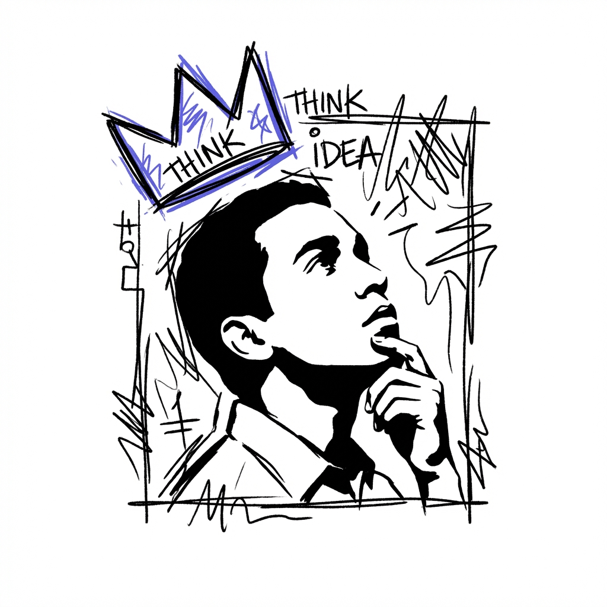
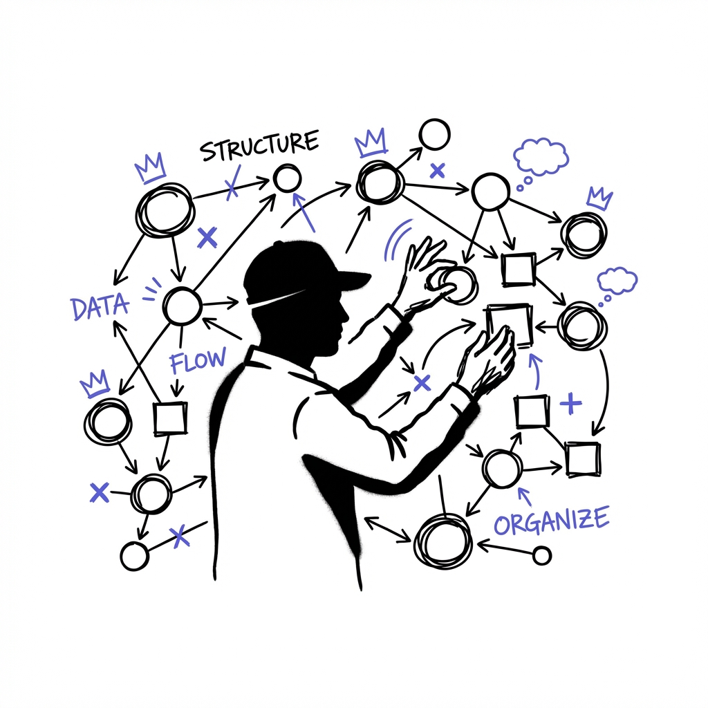
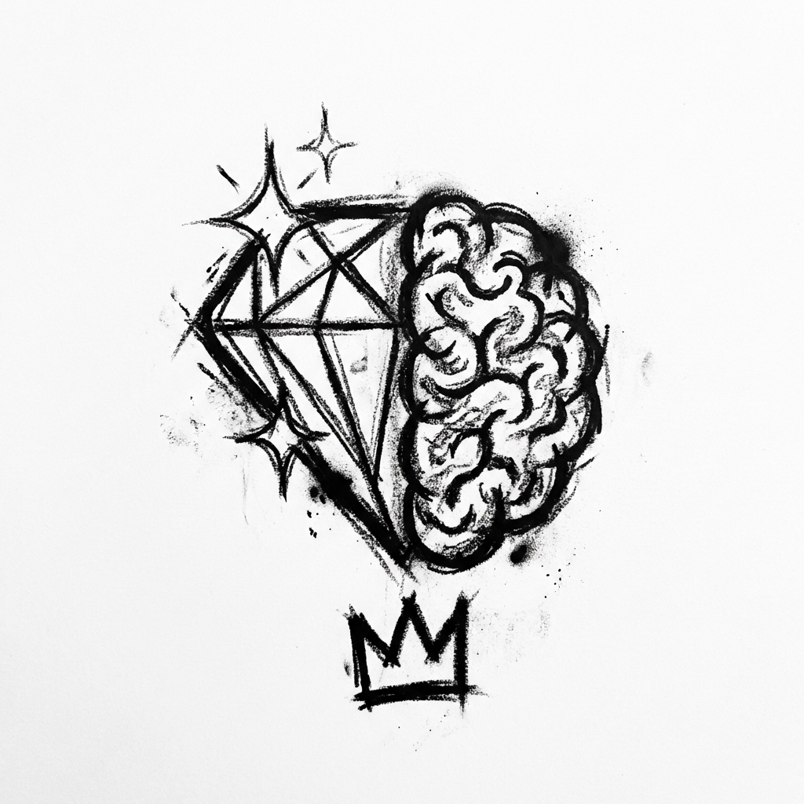
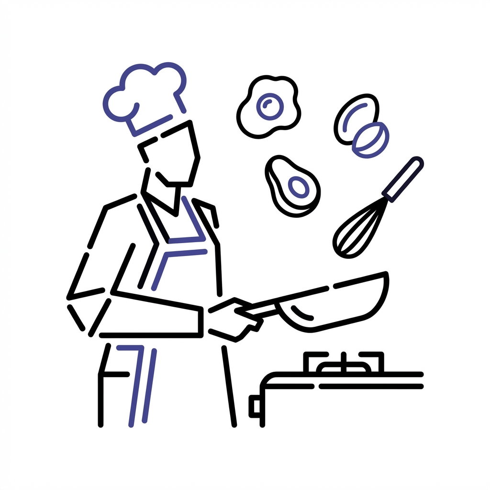
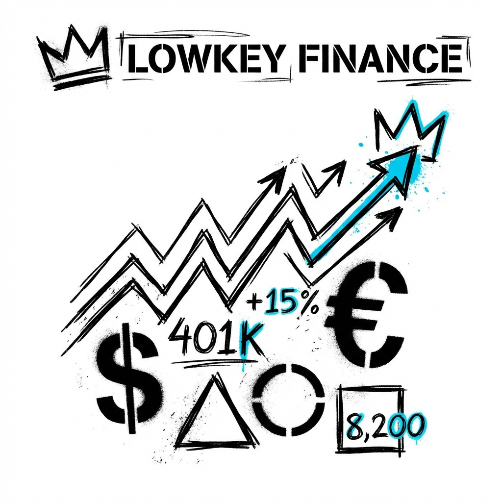
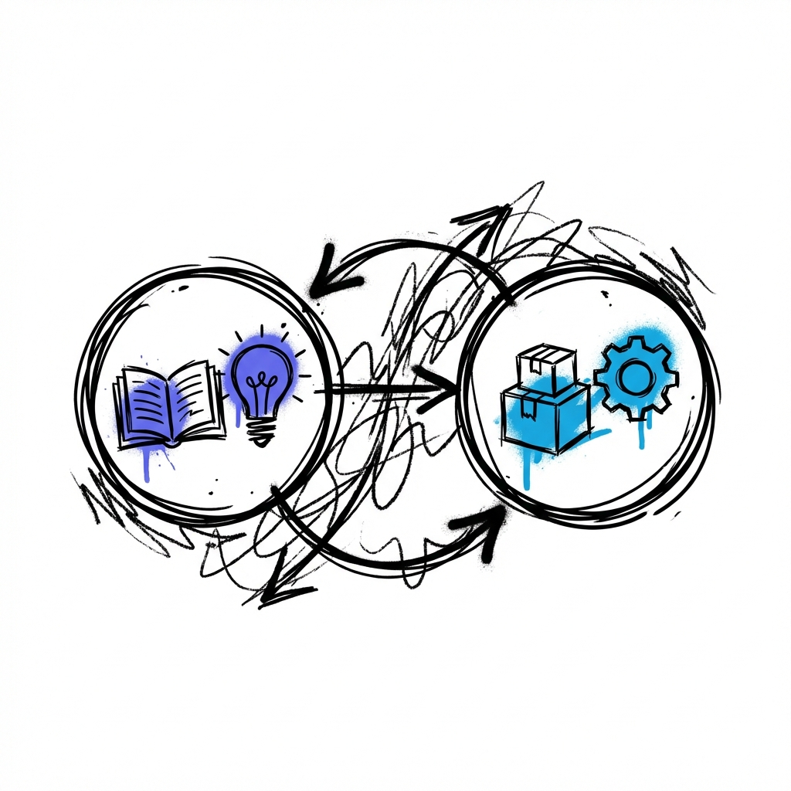

Construir claridad mental con sistemas conectados.
Sin trucos. Sin motivación vacía. Solo herramientas reales, crecimiento real y una mente construida para crear.

Descubre el poder de Second Brain.
Todo tu trabajo e ideas en un solo sistema. Planificación y seguimiento sin fisuras para una vida organizada.
- ✓ Organiza tareas y proyectos sin esfuerzo.
- ✓ Rastrea tu progreso e hitos.
- ✓ Captura y desarrolla tus ideas al instante.

UniversityGem: Tu Mentor de IA Personal
Transforma cómo adquieres conocimiento con orientación personalizada diseñada para tu flujo de trabajo.
- ✓ Aprendizaje Inteligente: Guía para un estudio profundo.
- ✓ Insights Estratégicos: Conocimiento oculto relevado.
- ✓ Exploración Proactiva: Expande tus límites de aprendizaje.

Keto Coach: Nutrición con IA
Gestiona tu dieta keto con precisión y simplicidad extrema.
- ✓ Rastreador inteligente de macros.
- ✓ Recetas adaptadas a tu tiempo.
- ✓ Generador de listas dinámico.

Lowkey Finance: Control Financiero
Gestión de activos, ingresos y gastos en un dashboard totalmente minimalista.
Lowkey Finance es tu herramienta definitiva para controlar tu dinero. Registra inversiones, monitoriza activos en tiempo real y gestiona flujos de caja.
- • Portfolio de inversiones en tiempo real.
- • Tracking de activos (cripto, stocks, fondos).
- • Registro de ingresos y gastos previos.
- • Resumen visual de patrimonio neto.
Tu dinero. Tu control. Tu claridad.

Conecta Tu Ecosistema
Tu ecosistema de pensamiento conectado.

UniversityGem se convierte en tu mentor personal para explorar ideas, mientras que Second Brain las organiza para siempre.
Preguntas Frecuentes
Sí, todos nuestros sistemas incluyen guías paso a paso para comenzar desde cero.
Solo necesitas una cuenta de Google para acceder a través de la plataforma de Gemini.